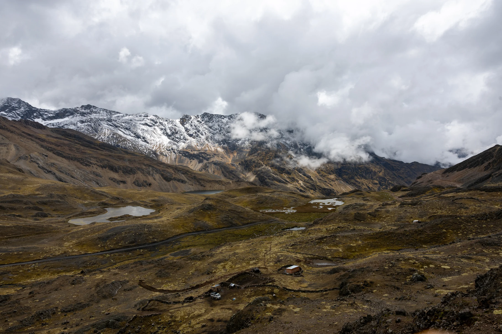
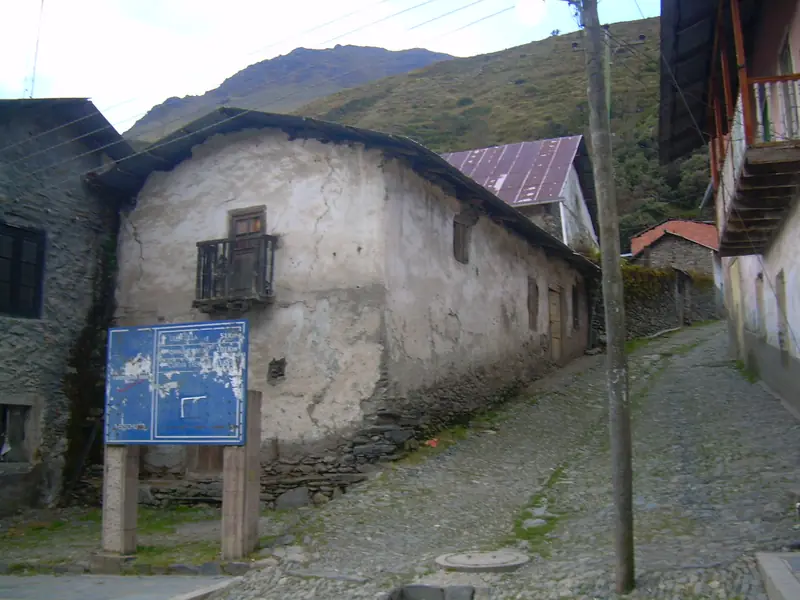
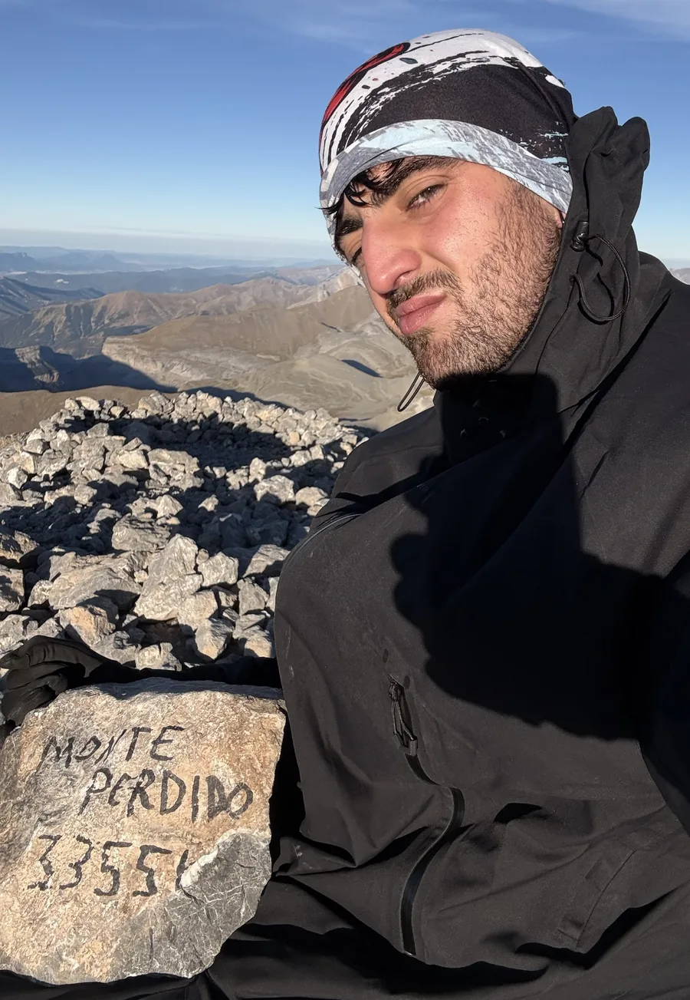

Exigència física
Alta
Jornades de fins a 9 h 30, sis dies seguits, i gairebé 1.500 m de baixada l’últim dia.

BOLÍVIA · SERRALADA D’APOLOBAMBA
Sis jornades a peu entre Pelechuco i Charazani, per camins de pastors i un pas a més de 5.000 m. Grup reduït, guia de muntanya i guia local.
Juny de 2027 · millor època: de mitjan juny a finals de juliol
01 / NIVELL I REQUISITS
Quatre indicadors per saber, d’un cop d’ull, què demana la travessa. La dificultat tècnica és baixa: el que la fa exigent és la durada, l’altitud i l’aïllament.11 dies / 10 nits / 6 jornades a peu, + 2 dies de reserva
Jornades de fins a 9 h 30, sis dies seguits, i gairebé 1.500 m de baixada l’últim dia.
Sender i pista, sense grimpada. No cal grampons ni piolet: amb neu dura o gel, no es creua.
Cinc nits per sobre dels 4.000 m i un pas a 5.032 m. Cal aclimatació i no tothom s’hi adapta igual.
Sense cobertura de mòbil. Una evacuació pot trigar hores o un dia, per pista o a peu.
02 / L’EXPERIÈNCIA
Hi ha viatges que es mesuren en quilòmetres. Aquest també es mesura en allò que aprenem pel camí.
De Pelechuco a Charazani, la travessa enllaça valls andines, passos alts i paisatges de pastura al peu de les glaceres de l’Apolobamba. És una ruta exigent i poc freqüentada, que recorrem sense presses, amb temps per al coneixement local i la convivència.
Interpretem el paisatge amb respecte per les comunitats i el seu coneixement.
Ritme compartit, reagrupaments i consignes clares.
Guia de muntanya i guia local, amb un programa pensat per aclimatar-se bé.

03 / LES ETAPES
Cada dia caminem amb llum: sortida a partir de les 07.10 i arribada al campament abans de les 16.40, hora de Bolívia. Tria una jornada per veure’n les dades principals.

Sortim de Pelechuco i pugem de manera sostinguda fins al primer pas, a 4.706 m, sobretot per la pista minera que el creua. Baixem a la vall del riu Kotani i acampem al fons de la vall. Una jornada per trobar el ritme del grup i veure com respon cadascú a l’altitud.
Més de 1.000 m de pujada sostinguda i primera nit en tenda a 4.168 m.
Els punts de pas, els mapes i els horaris detallats de cada jornada són al dossier complet, que t’enviem quan ens escrius.
53,4 km en total. Distàncies i desnivells són aproximats i els horaris són de planificació: el recorregut encara s’ha de reconèixer sobre el terreny abans d’obrir reserves. Prop d’un terç del camí segueix pistes obertes per la mineria.
El pas Sunchulli és més alt que el Mont Blanc, i dormirem cinc nits per sobre dels 4.000 m. Per això el programa comença amb tres dies d’aclimatació.
04 / EL PROGRAMA
Tres dies a La Paz per aclimatar-nos, un de trasllat, sis jornades a peu i un de retorn.
| Dia | Jornada | Què fem | Nit |
|---|---|---|---|
| 1 | Arribada a La Paz | Recollida a l’aeroport d’El Alto, trasllat a l’hotel i reunió de benvinguda a les 19.00. | Hotel · 3.650 m |
| 2 | Adaptació a La Paz | Passeig suau per la ciutat, hidratació i descans. | Hotel · 3.650 m |
| 3 | Aclimatació i preparació | Caminada moderada, revisió de material i reunió prèvia. | Hotel · 3.650 m |
| 4 | La Paz → Pelechuco | Trasllat en 4×4 pel llac Titicaca i l’altiplà d’Ulla Ulla. Unes 12 hores. | Allotjament local · 3.660 m |
| 5 | Pelechuco → Campament 1 | 9,7 km · +1.047 m · 6–8 h | Tenda · 4.168 m |
| 6 | Campament 1 → Hilo Hilo | 4,2 km · 2–3 h · tarda de descans | Tenda · 4.010 m |
| 7 | Hilo Hilo → pas Sunchulli → Campament 2 | 11,4 km · +1.062 m · 7–9 h | Tenda · 4.500–4.700 m |
| 8 | Campament 2 → Incacancha | 8,3 km · −867 m · 5–7 h | Tenda · 4.060 m |
| 9 | Incacancha → Campament 3 | 4,1 km · +602 m · 4–6 h | Tenda · 4.171 m |
| 10 | Campament 3 → Charazani | 15,8 km · −1.473 m · 8–9 h 30 min | Allotjament local · 3.195 m |
| 11 | Charazani → La Paz | Retorn en vehicle (7–8 hores) i comiat. | Fi del viatge |
QUAN ANAR-HI
Sortida proposada: segona quinzena de juny de 2027
El cor de l’estació seca: temps més estable i nits fredes.
Possibles, però amb més pluges o tempestes de tarda.
Pot nevar fort als passos: només amb previsió estable.
Estació de pluges: no hi anem.
Cada jornada té un pla B preparat i hi ha una ruta alternativa completa. Si cal canviar, el guia ho decideix pensant en la seguretat del grup.
Si el temps, el terreny o el grup no acompanyen, tornem enrere, escurcem la jornada o seguim en vehicle.
Inclosos en el preu, per esperar millor temps o aclimatar-nos més.
Si el pas principal no és practicable, fem la travessa per un altre camí fins a Charazani.
05 / PREU DE REFERÈNCIA
Preu de referència amb reserva anticipada, per a un grup mínim de 8 persones i un màxim de 13. És una estimació del projecte, pendent dels pressupostos reals dels proveïdors locals.
Veure les condicions2.850 € per persona · A menys de 90 dies de la sortida
Les reserves encara no estan obertes. Dates, preu i serveis es confirmaran després del reconeixement del recorregut.
Com es reserva
Per WhatsApp, amb la data que t’interessa i la teva experiència.
Parlem de la teva experiència, salut i expectatives per veure si la travessa és per a tu.
Et passem el dossier complet i el contracte de viatge combinat.
Pagues la senyal del 30 % i la plaça queda confirmada. La resta, 45 dies abans de sortir.
| Quan anul·les | Despeses sobre el preu total |
|---|---|
| Més de 90 dies abans | 10 % |
| De 90 a 61 dies | 25 % |
| De 60 a 31 dies | 50 % |
| De 30 a 15 dies | 75 % |
| Menys de 15 dies o no presentar-se | 100 % |
CONDICIONS DEL VIATGE
El viatge surt amb un mínim de 8 persones i un màxim de 13. Si no s’arriba al mínim, t’avisem com a mínim 30 dies abans i et retornem el 100 % del que hagis pagat en 14 dies, o et guardem la plaça per a una altra data.
Guia de muntanya i guia local (amb 10–13 persones s’hi afegeix suport local), trasllats en 4×4 del programa, mules, tots els àpats i allotjaments del programa, tendes i material col·lectiu, i assegurança de viatge i activitat amb trekking fins a 5.100 m, rescat i repatriació.
Els dos dies de reserva estan inclosos en el preu. Si s’han d’utilitzar, no tenen cost addicional. Si una situació exigís més dies, t’informaríem del nou programa i del cost abans de continuar.
Experiència en travesses de diversos dies, conversa prèvia amb el guia, revisió amb medicina del viatge i passaport vigent. Cal disposar de 13 dies, més els vols.
Quan s’obrin les reserves: conversa prèvia, dossier complet i contracte de viatge combinat. La plaça queda confirmada amb una senyal del 30 % i la resta es paga 45 dies abans de sortir. Preu: 2.700 € fins a 90 dies abans i 2.850 € després. Andes Wild Trek actua com a organitzador del viatge.
El guia pot modificar, escurçar o aturar una jornada per seguretat, meteorologia o estat del grup. Cada jornada té un pla B: l’última es pot acabar a Curva amb vehicle i, si cal, s’evacua per les pistes. Aquests canvis no tenen cost addicional.
Si abans de sortir el pas Sunchulli no és practicable o la zona minera no ho aconsella, la travessa es fa per Cañisaya i el camí de l’Akamani. El programa comença amb un trasllat de La Paz a Curva i dura nou dies. El preu no canvia: es mantenen guies, mules, àpats, allotjaments i trasllats, i els dos dies que s’estalvien s’afegeixen als de reserva. T’ho expliquem i ho acceptes abans de sortir de La Paz.
Despeses sobre el preu total: 10 % a més de 90 dies, 25 % de 90 a 61, 50 % de 60 a 31, 75 % de 30 a 15 i 100 % a menys de 15 dies o si no et presentes. Pots cedir la plaça a una altra persona que compleixi els requisits. Sense despeses si hi ha circumstàncies inevitables i extraordinàries a destinació. Condicions pendents de validar amb assessoria.
Per a grups de 8 a 13 persones, amb dates a triar dins de la temporada (del 15 de juny al 31 de juliol) i pressupost a mida.
EL TERRITORI
L’Apolobamba no és només paisatge. Caminem per un territori habitat, amb una cultura pròpia que mereix temps i respecte.
Charazani i Curva són el cor de la cultura kallawaya, coneguda arreu dels Andes pels seus remeiers itinerants i el seu saber sobre plantes medicinals. La UNESCO va inscriure la seva cosmovisió al patrimoni cultural immaterial de la humanitat.
El dia del trasllat travessem l’altiplà d’Ulla Ulla. L’àrea es va protegir el 1972 per salvar la vicunya i avui forma part de l’Àrea Natural de Maneig Integrat Apolobamba, on les comunitats en gestionen la fibra.
Als colls trobarem apachetes: munts de pedres on els caminants deixen una ofrena i demanen permís a la muntanya. L’Akamani, que voregem el cinquè dia, és la muntanya sagrada dels kallawayes.
Fonts: UNESCO · WCS Bolivia
COM TREBALLEM
La manera de guiar forma part de l’experiència. Preparar, observar, explicar i aprendre per millorar.

Conversa prèvia per valorar experiència i expectatives, reunió de grup i informació clara sobre nivell, material i possibles canvis.
Briefing breu: objectiu del dia, condicions, aigua, punts de decisió i estat del grup.
Ritme de grup, reagrupaments i explicacions sobre el paisatge i la cultura en llocs adequats. El dia del pas Sunchulli, la prioritat és caminar.
Revisió diària amb el grup, enquesta anònima i pla de millora per a la següent edició.

EL TEU GUIA
Izan Pimentel Pérez
Guia de muntanya · Fundador d’Andes Wild Trek
Guia de muntanya format com a tècnic esportiu en mitja muntanya, amb especialització en esquí de muntanya i experiència guiant grups a l’estranger. La seva muntanya de cada dia és el Pirineu; l’Apolobamba és el projecte amb què vol portar aquesta manera de guiar als Andes.
06 / PREPARACIÓ
Per a persones amb experiència de travessa, capacitat per a jornades llargues i flexibilitat per conviure amb tendes, fred i canvis de programa.
Marca el que ja tens preparat. Allò obligatori es revisa a La Paz abans de sortir.
Les marques es desen només en aquest navegador. No s’envia cap dada.
07 / ABANS DE DECIDIR
No. Està pensada per a senderistes amb experiència en travesses de diversos dies, acostumats a jornades llargues i a dormir en tenda. Abans de reservar fem una conversa per valorar preparació i expectatives.
El programa dura 11 dies: tres d’aclimatació a La Paz, un de trasllat, sis jornades a peu i un de retorn. Hi afegim dos dies de reserva, de manera que cal disposar de 13 dies, més els vols.
La del pas Sunchulli, el dia 7: 11,4 km, uns 1.060 m de pujada, entre 7 i 9 hores i un coll a més de 5.000 m. Per això el dia abans és curt i dormim a Hilo Hilo.
Hotel a La Paz, allotjament local senzill a Pelechuco i Charazani i cinc nits en tenda, entre 4.000 i 4.700 m. Les nits són fredes, sovint sota zero.
De mitjan juny a finals de juliol, el cor de l’estació seca. Maig i setembre són possibles però més incerts, i a l’agost hi ha hagut nevades fortes al pas Sunchulli. Proposem la segona quinzena de juny de 2027.
No. El programa preveu mules per a tendes, cuina i equipatge; durant el dia portes una motxilla amb roba d’abric, aigua i menjar.
No es beu directament. A la zona hi ha mineria d’or, i tractar l’aigua no n’elimina els metalls: l’agafem només de fonts per sobre de les mines o que la comunitat ens confirma, la tractem sempre i en portem de reserva al tram de Sunchulli.
El guia pot aturar, escurçar o modificar una jornada, i cada jornada té un pla B preparat. Tenim dos dies de reserva, una ruta alternativa completa (el pla C, per Cañisaya i l’Akamani) i, a gairebé tot el recorregut, sortida en vehicle si cal. Amb neu dura o gel als passos, no es creua.
El preu inclou una assegurança de viatge i activitat que cobreix trekking fins a 5.100 m, rescat i repatriació. Si ja en tens una, revisa-ho amb nosaltres per no duplicar cobertures.
Encara no. El programa parteix d’un track GPS de 2012 i s’ha contrastat amb relats de caminants de 2022–2025, els itineraris d’operadors bolivians i OpenStreetMap, on ja apareixen les pistes mineres. Abans d’obrir reserves cal un reconeixement de passos, campaments, aigua i el pont de l’última jornada.
Encara no. Aquesta web presenta un projecte acadèmic de tècnic esportiu (TD2). Juny de 2027 és una proposta de dates; les reserves s’obririen després de validar el recorregut, els serveis, els permisos i les assegurances.
08 / DOCUMENTACIÓ
Documents per llegir amb calma, imprimir o portar al mòbil. El dossier complet te l’enviem personalment.
Nivell, requisits, programa dia a dia, punt de trobada, preu, reserva i cancel·lació.
DescarregaSalut i altitud, documents, què porten les mules i llista de material per marcar.
DescarregaQuè fer cada setmana per arribar preparat, amb treball de força i proves de material.
DescarregaEtapes punt a punt amb mapes i horaris, clima de juny, allotjaments, preparació i condicions. Te l’enviem quan ens escrius.
Demana’lEL PRIMER PAS
Mira el programa complet i comprova si la proposta encaixa amb la teva experiència.
Veure el programa dia a diaFitxa del viatgeM’INTERESSA
Escriu-nos per WhatsApp. Et respondrà el guia, t’enviarem el dossier complet (etapes punt a punt, mapes, clima i preparació) i t’avisarem quan s’obrin les reserves. Sense compromís.